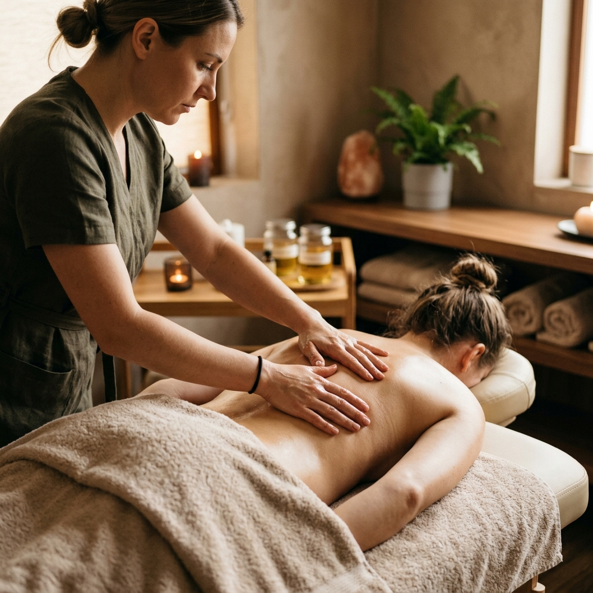
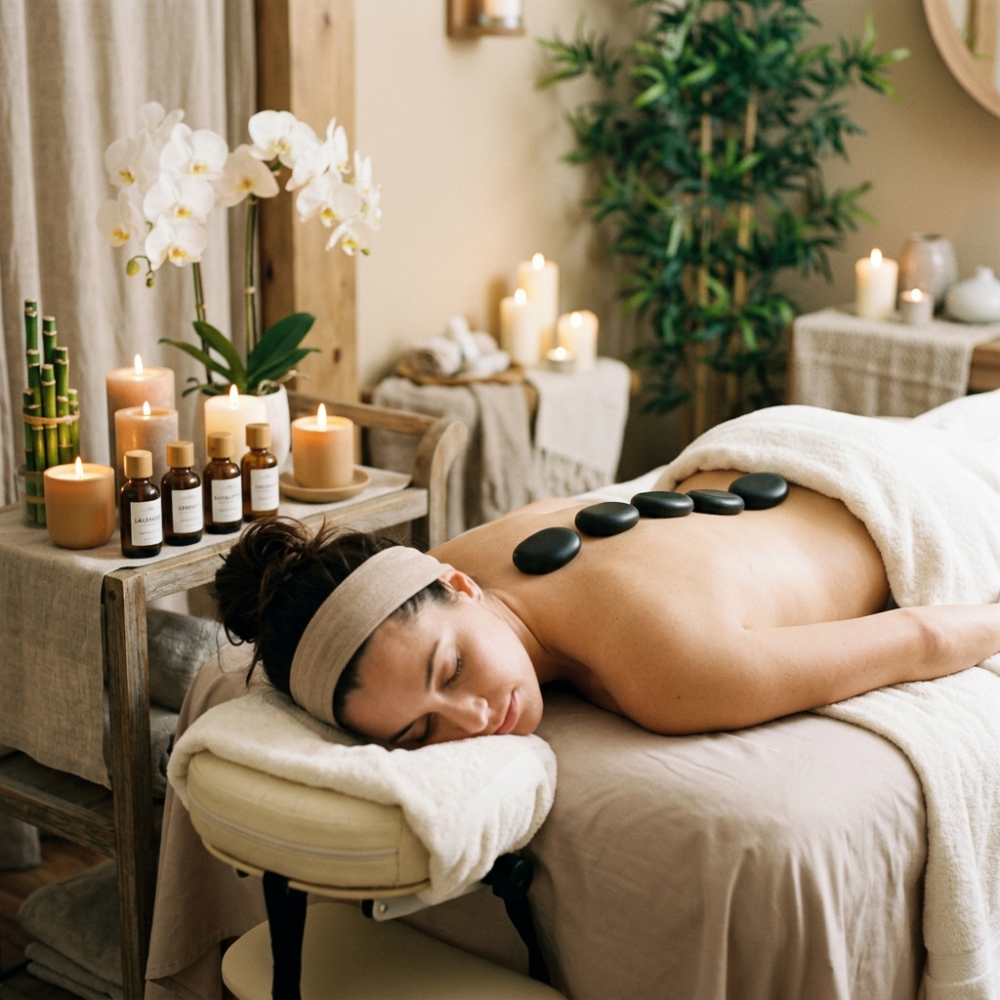
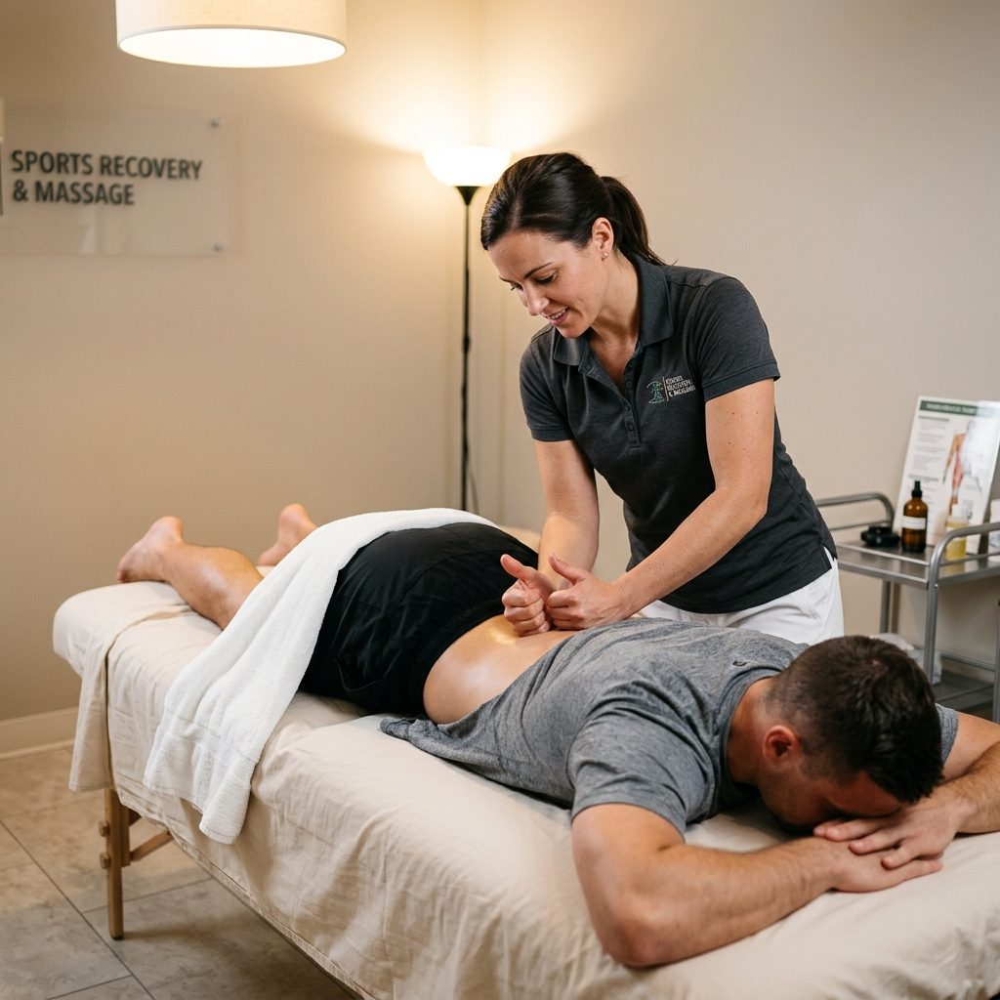
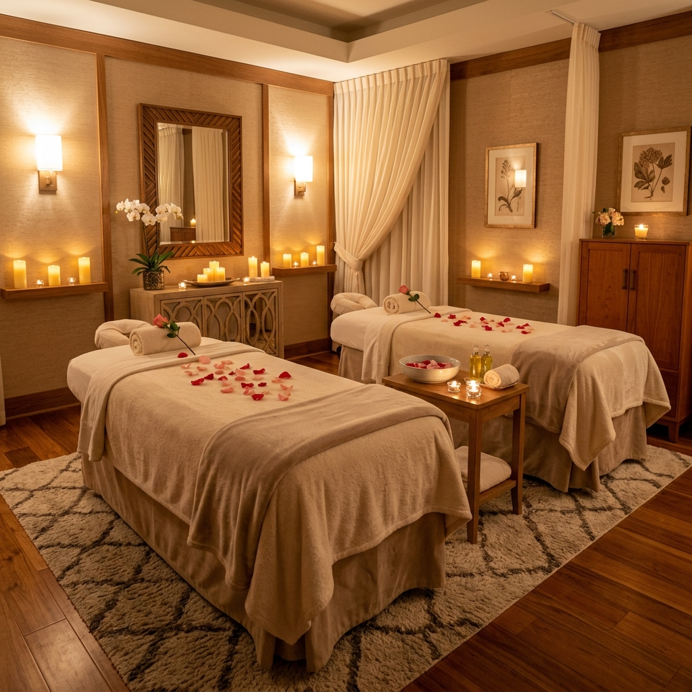
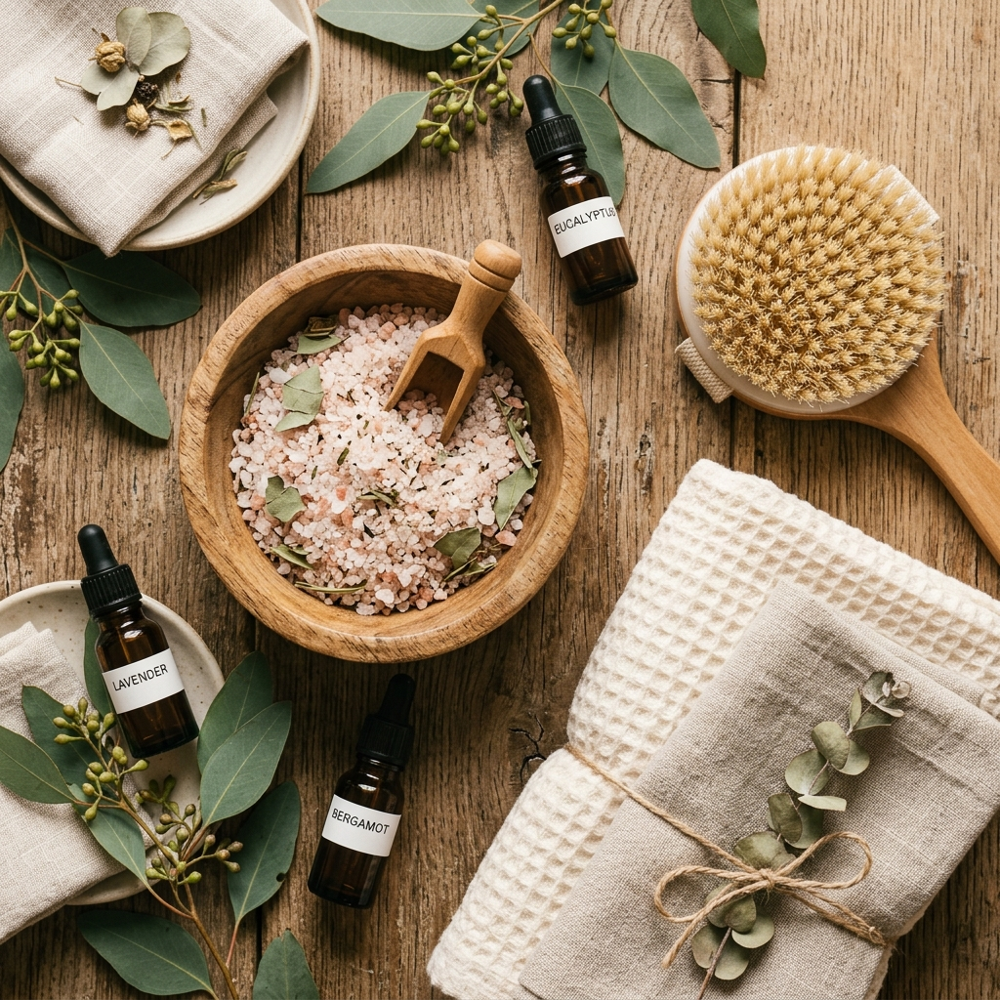

Þjónusta okkar
Fjölbreytt nuddmeðferð sem hentar öllum — líkama, huga og sál
Klassískt nudd
Klassískt nudd, einnig þekkt sem sænskt nudd, er ein þekktasta og útbreiddasta nuddmeðferðin í heiminum. Meðferðin byggir á fimm grunnhreyfingum sem eru ströflun, hnoðun, nuddhreyfingar, takttreflun og titringur.
Nuddið bætir blóðrás, losar um spennu í vöðvum, eykur sveigjanleika og stuðlar að almennri vellíðan. Þetta er ákjósanleg meðferð fyrir þá sem eru nýbyrjaðir í nuddheiminum eða vilja almenna slökun og endurnýjun.
Meðferðin hentar vel þeim sem búa við streitu, vöðvaspennu eða vilja einfaldlega njóta stunds friðar og ró.

Heildrænt nudd
Heildrænt nudd er meðferð sem lítur á manneskjuna í heild sinni — líkama, huga og sál. Þetta nudd sameinar ýmsar nuddtækni og aðferðir sem eru sérstaklega valdar út frá þörfum hvers og eins viðskiptavinar.
Markmiðið er ekki aðeins að lina verki eða spennu heldur einnig að stuðla að andlegri og tilfinningalegri jafnvægi. Meðferðin getur falið í sér þætti úr mörgum ólíkum nuddaðferðum, ilmolíum og orkuvinnu.
Heildrænt nudd er sérlega hentugt fyrir einstaklinga sem leita eftir djúpri slökun og vilja vinna með heilsu sína á öllum sviðum.

Slökunarnudd
Slökunarnudd er mýkt og róandi nudd sem er hannað til þess að draga úr streitu og spennu. Hægfara, flæðandi hreyfingar eru notaðar til þess að róa taugakerfið og skapa djúpa tilfinningalega og líkamlega slökun.
Þetta nudd er fullkomið í lok erfiðs dags, þegar hugurinn þarf hvíld og líkaminn kallar á umhyggju. Ilmolíur geta verið notaðar til að auka áhrif meðferðarinnar og skapa enn dýpri slökunarupplifun.
Slökunarnudd hentar öllum aldurshópum og er yndislegt gjöf — bæði til sjálfs sín og annarra.
🌿 Ráð fyrir nuddmeðferð
- Drekktu nægan vatn fyrir og eftir meðferð
- Forðastu þunga máltíð rétt fyrir meðferð
- Komdu nokkrum mínútum áður en meðferð hefst til þess að ná ró
- Láttu nuddara vita af verkjum, meiðslum eða ófremdarástandi
- Slökktu á síma og njóttu stundarinnar
Íþróttanudd
Íþróttanudd er sérhæfð nuddmeðferð sem er sniðin að þörfum íþróttafólks og þeirra sem stunda líkamsrækt reglulega. Meðferðin beinist að því að vinna á vöðvahópum sem verða fyrir miklu álagi í þjálfun og keppni.
Nuddið hjálpar til við að bæta hreyfigetu, draga úr vöðvabólgu, fyrirbyggja meiðsli og hraða bata eftir líkamlega áreynslu. Djúpar og einbeittar nuddtækni eru notaðar til þess að ná til innri vöðvalaga.
Hvort sem þú ert atvinnuíþróttamaður eða stundar hreyfingu til heilsubótar — íþróttanudd getur skipt sköpum í bataferli og frammistöðu.

Sogæðanudd
Sogæðanudd er létt og mjúkt nudd sem er sérstaklega hannað til þess að örva eitlakerfið og hjálpa líkamanum við að losa umfram vökva. Meðferðin notar hægfara, taktfastar hreyfingar sem fylgja náttúrulegri flæðistefnu eitlakerfisins.
Þetta nudd hentar sérstaklega vel þeim sem búa við þrota, vökvabúskap eða vilja styrkja ónæmiskerfið. Sogæðanudd er oft notað sem hluti af heilsu- og batameðferðum.
Meðferðin er róandi og mild, hentar vel viðkvæmu fólki og er jafnvel notuð eftir aðgerðir til þess að hraða bata og draga úr þrota.
🌿 Ráð eftir nuddmeðferð
- Drekktu ríkulega af vatni til að hjálpa líkamanum að losa úrgangsefni
- Forðastu þunga líkamsrækt í 24 klukkustundir eftir meðferð
- Taktu heitt bað eða sturtu til að halda vöðvum mjúkum
- Hlustaðu á líkamann — hvíldu ef þú þarft
- Njóttu þess að vera í augnablikinu og leyfðu þér slökun
Partanudd
Partanudd er upplifun sem þið deilið saman — hvort sem um er að ræða maka, vin eða fjölskyldumeðlim. Tvö nuddborð eru sett upp hlið við hlið í rólegu og hlýlegu umhverfi þar sem bæði njóta nuddmeðferðar samtímis.
Þetta er frábært tækifæri til þess að gefa ykkur sameiginlega stund friðar og slökunar. Partanudd er vinsælt sem gjöf á afmælisdögum, ársdögum eða einfaldlega sem leið til þess að njóta samveru.
Veldu úr okkar nuddtegundum og skapið ykkur ógleymanlega upplifun saman.

Skrúbbnudd
Skrúbbnudd er uppfrískandi meðferð sem sameinar nudd og skrúbbmeðferð. Náttúruleg efni eru notuð til þess að fjarlægja dauðar húðfrumur, hreinsa húðina djúpt og gefa henni nýja birtu og líf.
Eftir skrúbbmeðferðina er húðin mjúk, slétt og tilbúin til þess að drekka í sér rakandi efni. Nuddið sem fylgir stuðlar að blóðrás og djúpri slökun.
Skrúbbnudd er ákjósanlegt fyrir þá sem vilja upplifun sem bæði endurnýjar húðina og slaknar á líkamanum. Frábært val á hverri árstíð.
